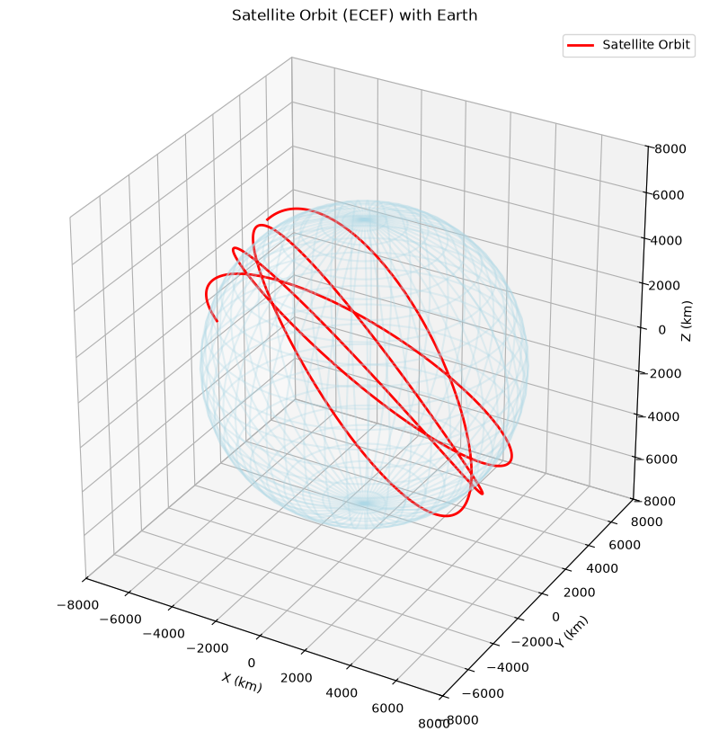
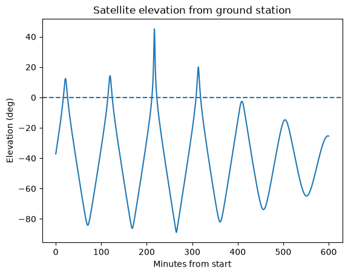
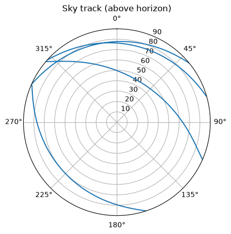
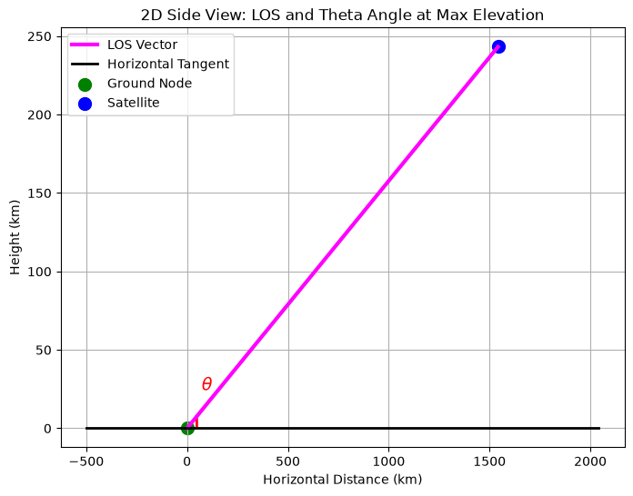

Satellite-to-Ground Line-of-Sight Geometry
Industry-sponsored senior project, Fall 2025 – Spring 2026 · Python
What it is
The project's goal was to send polarized light for a quantum communication link between a satellite and a ground station. As the satellite moves across the sky, the polarization frame rotates relative to the ground, so the system has to correct for it. Our team built a simulation of that correction.
My role
I owned the first stage, the geometry. My Python code puts the satellite and the ground station in the same Earth-fixed (ECEF) coordinate frame, traces the line of sight between them, and computes the angles (elevation, azimuth, polarization rotation) that feed the polarization-control stage. I derived the geometry by hand over winter break and wrote all four geometry notebooks. I was also the team's liaison with the sponsor and kept records of all team meetings.
Lucas Rossi gave a small assist on the geometry code.
The overall senior design team was Adrian Ayala, Ashley Tams, Alexander Pavlovic, Braden Yonano and Lucas Rossi; the rest of the team led the quantum optics, Stokes/Mueller polarization modeling, Monte Carlo simulation and waveplate control.
Method (my four notebooks)
| Notebook | What it does |
|---|---|
Altitude_Azimuth_angles |
Takes a satellite's orbit (TLE), propagates it with SGP4, converts it to ECEF, and computes elevation, azimuth and the line-of-sight vector from Boulder, CO |
ThetaAngleCalculation |
Plots the orbit on a 3D globe and computes the elevation θ from Boulder, with a below-horizon check |
Parallactic_angle |
Computes the parallactic angle q (how far the polarization frame rotates) for any azimuth/elevation |
Static_ECEFto_theta_psi |
Turns satellite and ground ECEF positions into elevation θ and polarization rotation ψ (WGS-84; ψ following Li et al. 2013) |
Results
- Team result: simulations met the ~1e-9 tolerance target. Lab tests did much worse, because of measurement error, low-precision waveplate labels and manual operation of the polarization control device.
- Expo: presented at the CU Senior Engineering Expo to 100+ people.
- ISS passes: with a current ISS orbit, my code finds four passes over Boulder in 600 minutes; the highest reaches 45.15° elevation.
- Example angle: the parallactic angle for one example point is q = 65.54°.
Figures

Satellite orbit around Earth in Earth-fixed coordinates.
Satellite elevation seen from Boulder over 600 minutes; above 0° means visible.
Sky track of the passes above the horizon (north up, azimuth clockwise).
Side view of the line of sight and elevation angle θ at maximum elevation.Code
Only my own geometry notebooks are shared; team and sponsor code is not included. GitHub: github.com/adrianayalav-a11y